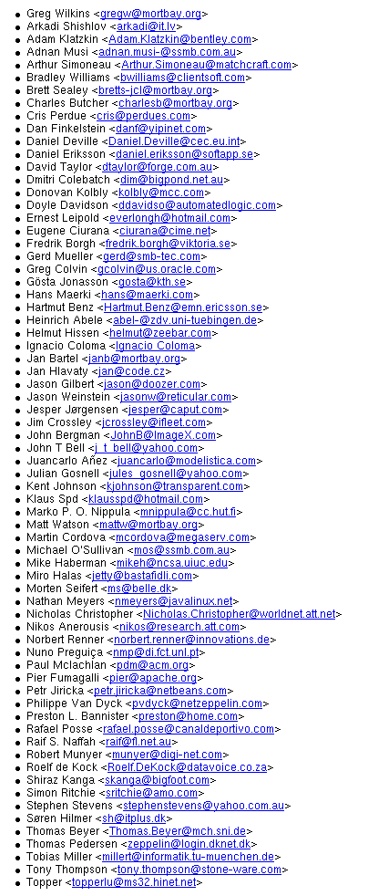

The Jetty project uses the javax.servlet classes and jasper JSP engine produced by the apache jakarta project.
The jakarta watchdog test suite is used to check Jetty's conformance to the servlet and JSP specifications. The quality of this test suite has greatly enhanced Jetty.
The following heroic individuals have contributed code, ideas, documentation, testing or time to
the Jetty Project:

Plus a few more - let us know if you're one of them ...